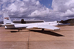

The BOREAS Information System
The BOREAS Information System
Remote Sensing Science (RSS)
RSS-8: MODIS Land Team (Modland) Algorithm Development for Boreal Forests: Participation in BOREAS
P.I.(s): Steven W. Running -- University of Montana
Co-I(s): Jan-Peter Muller -- Univ. College London; Dorothy Hall, Yoram Kaufman -- NASA/GSFC; Alfredo Huete -- Univ. of Arizona; Zhengming Wan -- CRSEO Univ. of Calif.; Christopher Justice -- NASA/GSFC; D. Carneggie -- USGS EDC
Objectives: To take ground validation measurements of:
- land cover mapping of the northern and southern sites, using both TM data and MODIS airborne simulator (MAS) data with ground derived
- mapping and satellite monitoring of the seasonal snowcover and snowmelt on both sites using MAS and ASAS sensors
- development of advanced spectral vegetation indices, predominantly using MAS and ground BRDF measurements
- surface temperatures, as monitored by the meteorological tower network planned for each site, and related to both aircraft and satellite measured thermal emittances
Another main purpose is to use carbon and water flux measurements taken from cuvette, tower and aircraft levels by other investigators to validate our hierarchical modeling of ecosystem water and carbon balances done with FOREST-BGC and our current NDVI modeling. We are integrating these core products into new spatially scalable estimates of daily photosynthesis-respiration balances, evapotranspiration, and soil decomposition and CO2 production. These products, tested and validated during the IFCs, will be extrapolated to the global boreal forest biome.
RSS-8 Pictures
 The NASA ER-2 carrying the MODIS Airborne Simulator (MAS)
View the MODIS Airborne Simulator (MAS) WWW Pages.
View a MAS image of Candle Lake in the Southern Study Area.
RSS-8 Data Sets
BRDF
Canopy Photography
Surface Temperature Map
Land Cover Map
LAI Map
NPP, GPP, NEE, R Maps
Snow Cover Map
BIOME-BGC Results
Get some RSS-8 data using FTP (BOREAS Investigators only, password required). [FTP Help]
Click on a team designation to go to that page.
RSS Overview || RSS-1 | RSS-2 | RSS-3 | RSS-4 | RSS-5 | RSS-6 | RSS-7 | RSS-8 | RSS-9 | RSS-10
RSS-11 | RSS-12 | RSS-13 | RSS-14 | RSS-15 | RSS-16 | RSS-17 | RSS-18 | RSS-19 | RSS-20
 Send a data request to the BOREAS Data Manager (BOREAS Investigators only)
Send a data request to the BOREAS Data Manager (BOREAS Investigators only)
E-Mail a comment on this page to the curator 
Send e-mail to Jaime Nickeson, the BORIS representative for the RSS group
Return to the RSS Overview
Return to the BOREAS Science Groups Overview
Return to the BOREAS Home Page
Last Updated: October 21, 1997
{kind=link}